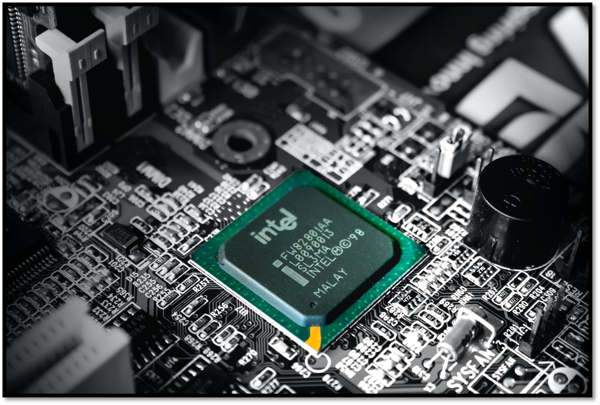

Used System Verilog in ModelSim to design, verify, and simulate a microprocessor for programmable logic or VLSI utilization.
Ported the code into Quartus Prime to program a Cyclone V FPGA, and tested the program on a DE0-CV development board.


Wrote programs using the RPi.GPIO library to take inputs from a breadboard circuit, process the inputs on a Raspberry Pi 4 to generate outputs, and send outputs to various passive elements.
Virtual Python was also used to create visual simulations of what was physically occuring in the circuit for verification purposes. The two projects in this collection are real-time applications which include
an analog RGB LED hue modifier, and an analog LED brightness modifier.

Designed a broadband 90-degree hybrid coupler using the double-box branchline topology to cover the frequency range 3.4 to 4.2 GHz using MATLAB and Keysight ADS.
Optimized and verified the coupler within requirements for input reflection coefficient, output power split balance, output phase difference, isolation, and transmission line width.

Designed and analyzed ideal and nonideal differential amplifiers using Cadence Virtuoso.
Constructed amplifiers within requirements for supply voltage, differential voltage gain and output swing, and total current.

Created a CAD of a WR-75 hollow rectangular waveguide using Keysight EMPro software.
Simulated the waveguide using the Finite Element Method to analyze the vector fields of the Electric Field and Surface Current Density.

Wrote programs utilizing functions, decisions making statements, loops, objects and methods.
The three programs in this collection are a program for managing a simple bank account, a program for grade calculations, and a program for reporting snowfall at a ski resort.

Analyzed the radiation pattern, gain, realized gain, and impedance characteristics of a dipole antenna and two-element dipole arrays using EZNEC software.
A communication link between two half wave dipole antennas was simulated to obtain the power received to power transmitted ratio.

Used previously characterized PMOS and NMOS transistors on a CD4007 MOSFET array to build and analyze a CMOS inverter.
Studied a two-input CMOS NAND gate and a two-input CMOS NOR gate. Building and testing was achieved using an analog multimeter, digital oscilloscope, digital waveform generator, and LTSpice.

Designed and tested the digital logic for the lateral movement of an autonomous wheelchair.